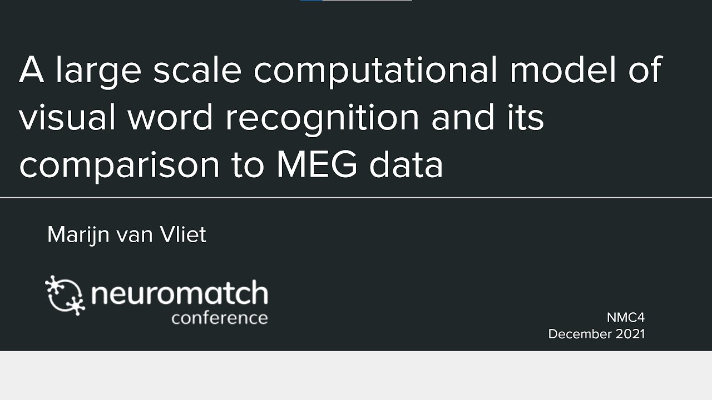

Back to the CMHC lab page
Back to the CMHC lab page
Convolutional networks can model the functional modulation of MEG responses during reading
Project Summary
To better understand the computational steps that the brain performs during reading, we used a convolutional neural network as a computational model of visual word recognition, the first stage of reading. In contrast to traditional models of reading, our model directly operates on the pixel values of an image containing text, and has a large vocabulary of 10k Finnish words. The same stimuli can thus be presented unmodified to both the model and human volunteers in an MEG scanner. In a direct comparison between model and brain activity, we show that the model accurately predicts the amplitude of three evoked MEG response components commonly observed during reading. We conclude that the deep learning techniques that revolutionized models of object recognition can also create models of reading that can be straightforwardly compared to neuroimaging data, which will greatly facilitate testing and refining theories on language processing in the brain.
Here is a video presentation of the project. A talk given at the Neuromatch conference in 2021:
Below is a graphical summary of the main results: comparing model- to brain-activity. The same set of visual stimuli (color coded in the figure) were presented to human volunteers in an MEG experiment, and to a VGG-11 convolutional network. The amount of brain activity to each stimulus was quantified at three locations along the cortex (equivalent current dipole (ECD) modeling, A) and compared to the sum ReLu activity at the layers of the model (B):